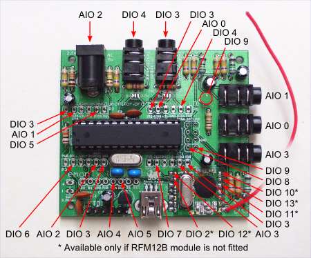

Hi,
I need to check current on 5 points.
I want to use two emonTx with 3 CT + 2 CT, but can i use the same AC-AC adapter to provide the voltage to the two different AC voltage sensors of the two EmonTx ?
Is there any drawbacks to do this share ?
Is there any other solution ? I don't want to use 2 AC-AC adapter if there is a solution with only one...
Thank you for your answer.
Yann
Re: Is it possible to use only one AC-AC Adapter toward 2 AC voltage sensors ?
You can, ideally you'd need to tie the ground connections of the two emonTx's together too.
Alternatively, you could construct two more current input circuits on stripboard or equivalent and wire to the two unused analogue inputs. If you are using emonLib and sampling the 5 currents sequentially, that may be a better solution. But if you need continuous readings, the processor will be heavily loaded and the number of samples per cycle will suffer.
Re: Is it possible to use only one AC-AC Adapter toward 2 AC voltage sensors ?
Thank you for your answer.
You tell about 2 extra analog port, but if i read

you mean the AIO4 and AIO5 ?
Yes, i need continuous readings... Then i think i will order a new EmonTx and i will tie the ground connections, then i don't need to buy an extra AC-AC.
Thank you !
Re: Is it possible to use only one AC-AC Adapter toward 2 AC voltage sensors ?
Hello,
I'm using successfully two EmonTx (one on Node 10, the other on Node 11) to make 6 CT sensors working together simultaneously.
I'm using a DC/DC splitter to use the same AC/AC power supply, but i noticed some differences, here is a screenshot of a chart showing there is approximately always a stable difference of 3 volts :
1. how can it be explained ?
2. can it induce some differences in measuring ? ( i mean watts on CTs )
3. do i need to adjust some values on ct*.voltageTX(228.268, 1.7); and ct*.currentTX(3, 111.1); ?
4. you talked about joining the grounds, but i assumed that if the 2 emonTx are powered by the same USB on a PC, it is already the same ground : did i make a mistake ?
Thank you for your help,
Have a nice week end !
Re: Is it possible to use only one AC-AC Adapter toward 2 AC voltage sensors ?
You need to adjust the voltage calibration constant (you have it as 228.268) of each to read the same voltage as your multimeter. The difference is because of the tolerance of (a) the resistors and (b) the voltage reference inside the Atmel processor. It will of course affect the power readings.
If you are powering both from the same USB supply, then that is fine, the grounds and the 5 V (PWR) are connected.